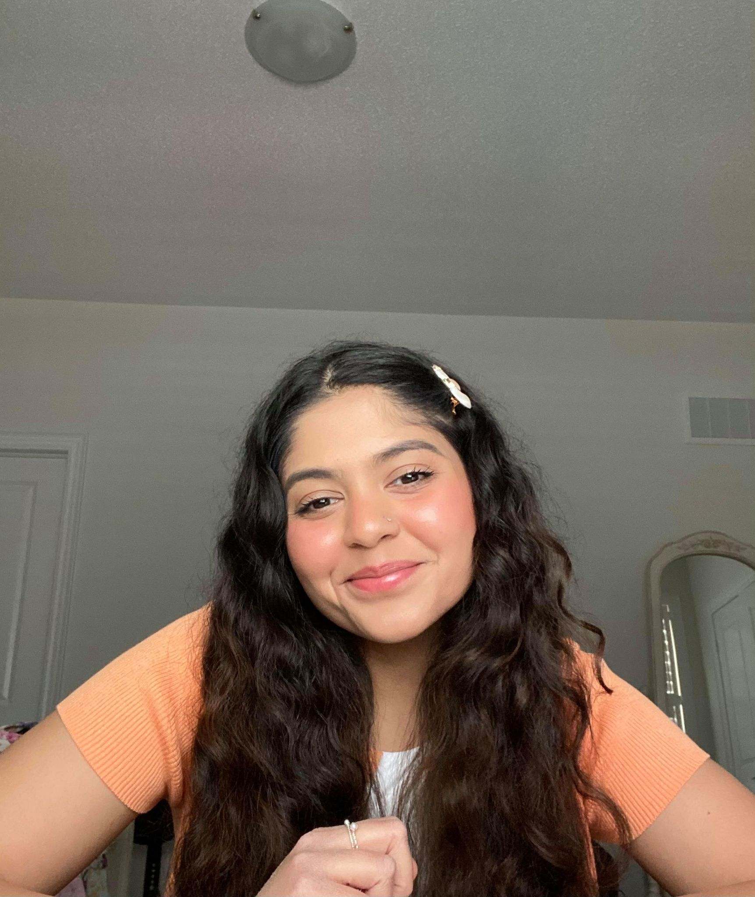

Kashaf
Computer Scientist, Instagrammer, Writer.
Hello! My name is Kashaf and I am a computer science student. I am passionate about coding, writing, and helping others. I currently run an Instagram account, @KodewithKashaf in which I aim to inspire women in STEM. I also host a podcast, Worth the Ka$h! Below, you can see part of my most recent Instagram feed. To view my past work, volunteer experiences, writing, and more, please navigate through the tabs.